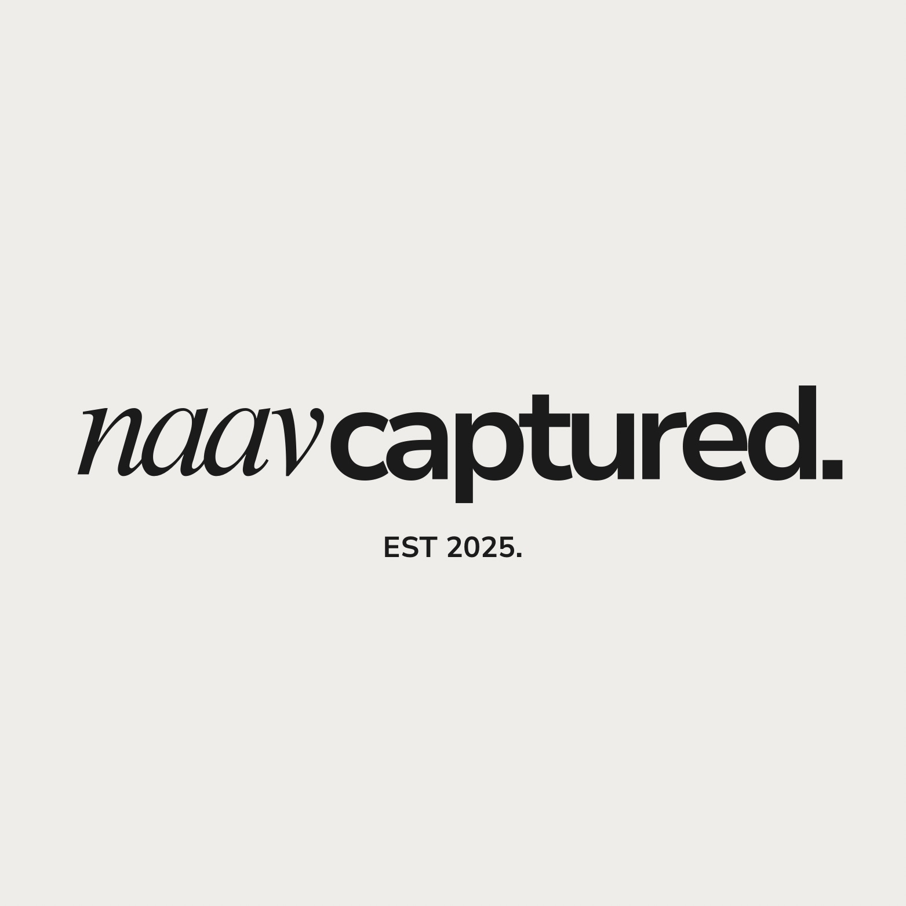
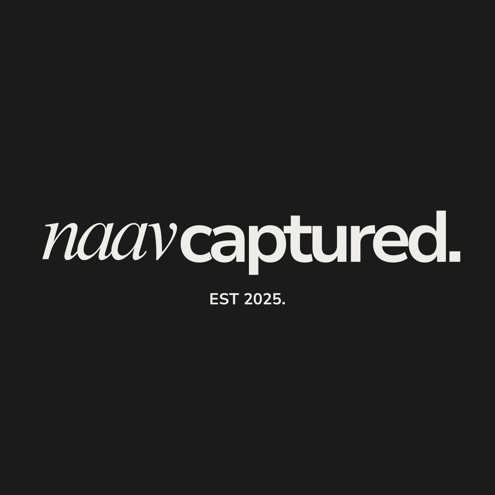
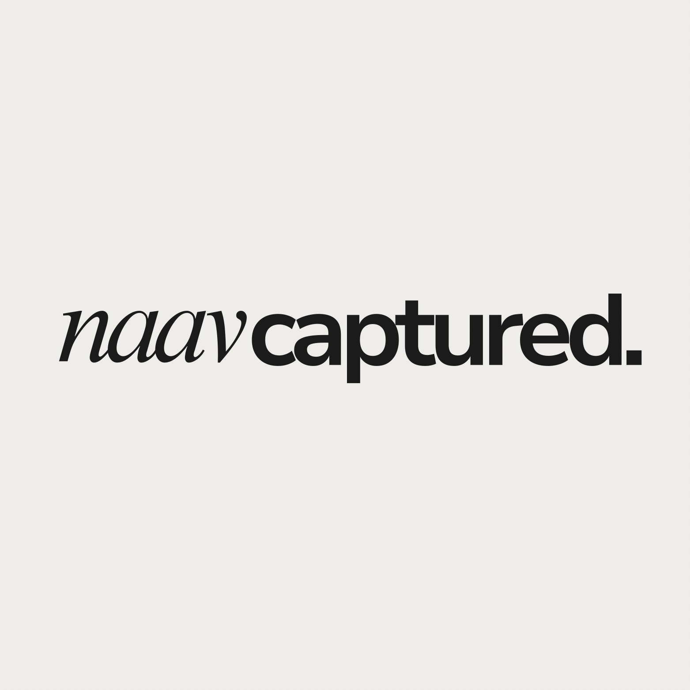
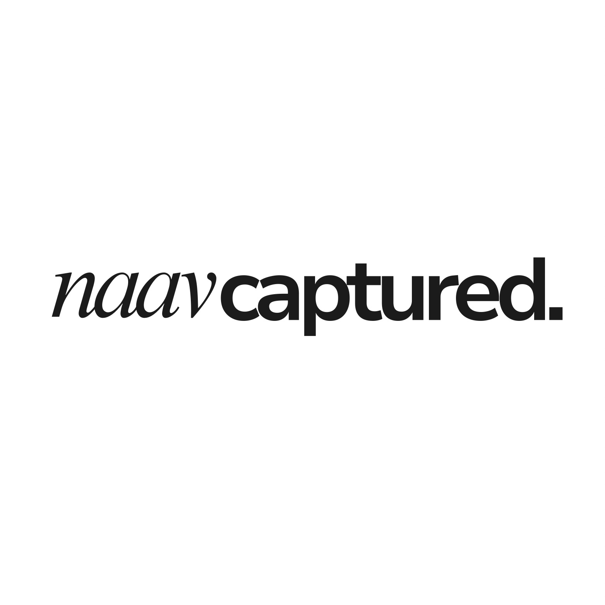
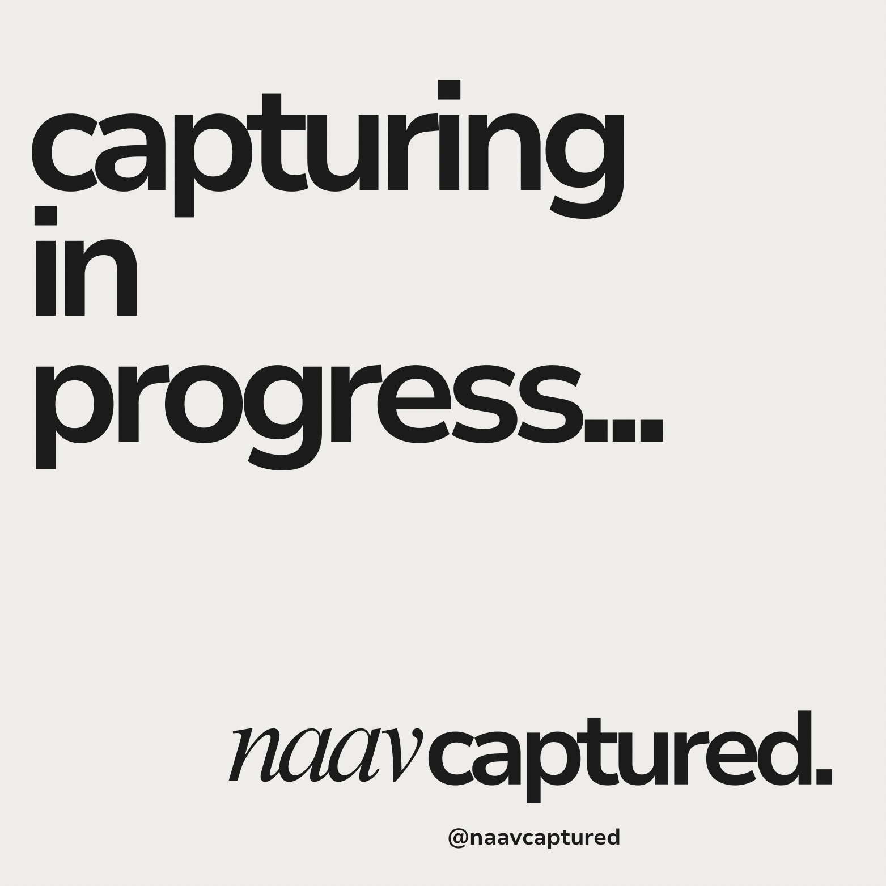

quiet, editorial, monochrome.
the wordmark.
One word, lowercase, with the full stop. naav in Times New Roman MT Italic, then captured. in Nunito Sans Black, on one baseline with almost no gap.




clear space.
Keep the height of the "c" in captured clear on every side. Smallest size: 80px wide on screen, 25mm in print.
rules.
- Ink on bone, ink on white, or bone on ink. Nothing else.
- Keep naav and captured. on one line, always together.
- Always keep the full stop.
- The italic naav is primary. The upright-serif version is archive only.
- Over photos, use a bone or ink plate behind the mark rather than placing it straight on the image.
don't.
Split it onto two lines.
Recolour one half, or use any colour but ink and bone.
Drop the full stop.
Set it in capitals, or swap the fonts.
Outline, shadow, gradient or stretch it.
ink on bone.
Bone and ink carry the brand. White lifts cards and galleries, stone draws hairlines, ash is for secondary text. Three status colours exist only inside the client portal and never appear in marketing.
#ECEAE6 to match the animation's render.#4E6A4B #805810 #A3412F on #E4E2DChow much of each.
Mostly bone. Ink for words and one button. Everything else is a whisper.
two voices, one line.
Both faces come from the wordmark. Nunito Sans does the work. Times italic is the naav voice: one or two words inside a heading, never a paragraph.
- Headings are lowercase, heavy, tightly tracked, and usually end with a full stop.
- Body text is sentence case. Labels in capitals only for small tags like EST 2025. or RAW.
- Never set a whole sentence in the italic.
understated and warm.
Talk about the moment and the client, not the gear. Short sentences, "we", plain words.
"We've been quietly working since August… figured it's time to introduce ourselves properly."
say.
don't say.
lots of bone.
A calm grid with room to breathe. Photos get 4px corners, no borders, no shadows, no filters. Cards use a stone hairline instead of a shadow. Buttons are pills.
inputs.
12px corners, stone border, white fill.
gallery tiles.
4:5 portrait, 8–16px gaps, ink tag bottom-left.
spacing.
corners.
icons.
Thin outline only (Lucide, 1.5px stroke) in ink or ash. Never filled or coloured.
the assets.
Everything lives in the website repo under assets/.
assets/logo/lockup-est-bone.jpgStacked lockup on bone, 1563pxJPGassets/logo/lockup-est-ink.jpgStacked lockup on ink, 1563pxJPGassets/logo/wordmark-bone.jpgWordmark on bone, 1563pxJPGassets/logo/wordmark-white.jpgWordmark on white, 1563pxJPGassets/logo/icon-512.pngItalic n on ink: app icon, favicon sourcePNGassets/social/share.jpgLink preview for WhatsApp and Instagram, 1200×630JPGassets/social/capturing-in-progress.jpgSocial post referenceJPGStill needed: SVG or transparent PNG exports of the wordmark and lockup from Canva, for print and sharp headers.
the post.
A huge lowercase statement top-left, the wordmark and @naavcaptured bottom-right, bone ground. Use the ink version sparingly, for announcements.
